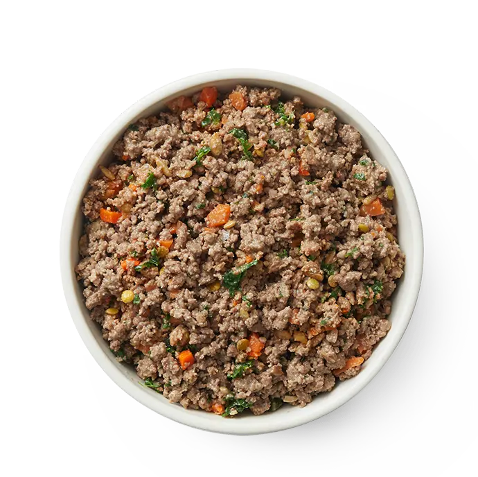

no deberias ser el unico que come sano.
Al igual que tú, amamos a nuestras mascotas y nos preocupamos por su salud. Es por eso que creamos The Farmer's Dog, un servicio que ofrece alimentos para mascotas recién preparados y equilibrados con recetas sencillas, guiadas por la ciencia e impulsadas por el amor.

calidad alta
Human-grade meat and veggies in simple recipes, made for dogs
grado humano
Safety and quality never before available to pets
hecho fresco
Maintain whole food and nutritional integrity
desarrollado
Nutrition that exceeds industry standards (AAFCO)